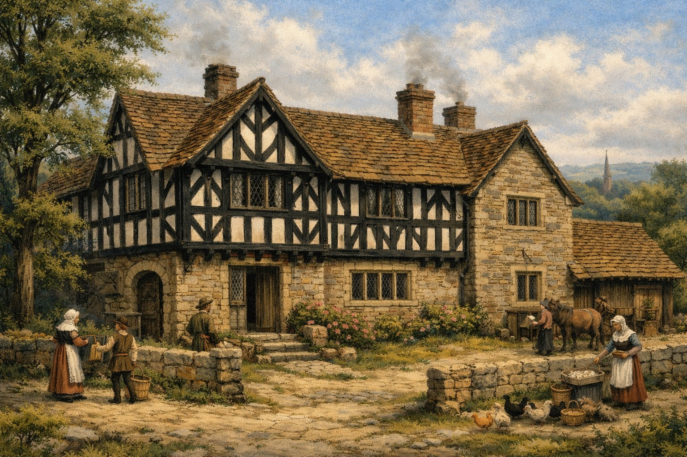

The Holt Family in the Tudor Transition (1485-1603)
The end of the Wars of the Roses in 1485 marked a decisive turning point for England and for the Holt family of Lancashire. With the victory of Henry VII at Bosworth and the establishment of the Tudor dynasty, the kingdom entered a period of relative stability after decades of dynastic conflict. For regional gentry families like the Holts, this era brought new opportunities in administration, land management, and social advancement.
From Survival to Stability
The Holts emerged from the Wars of the Roses with their estates intact, a rare achievement in a period marked by attainders, confiscations, and political upheaval. Their cautious neutrality and focus on manorial obligations allowed them to avoid the fate of neighbours such as the Pilkingtons of Bury, whose lands were seized after supporting Richard III.
Under the Tudors, this stability became the foundation for renewed growth. The family's holdings at Gristlehurst and Stubley continued to prosper, supported by favourable royal policies and the strengthening of local governance.
Sir Thomas Holt, Knighted 1544
One of the most significant figures of the Tudor era was Sir Thomas Holt, great grandson of James Holt of Gristlehurst. Knighted in 1544 during the reign of Henry VIII, Sir Thomas represents the family's rise to national prominence. His knighthood reflects both the Holts' loyalty to the Crown and their increasing influence in regional affairs.
Manorial Administration and Legal Change

The Tudor period saw major reforms in land tenure, taxation, and local administration. The Holts navigated these changes through careful stewardship of their estates. Inquisitions Post Mortem from the sixteenth century show continued continuity of landholding, with the family maintaining control over key properties in the Rochdale district.
The marriage alliances formed in the late fifteenth century such as the union between Constance Holt of Gristlehurst and Oliver Holt of Ashworth continued to shape the family's fortunes, creating a unified network of Holt branches across Lancashire.
The Dissolution and Economic Shifts
The Dissolution of the Monasteries (1536-1541) reshaped the economic landscape of Lancashire. While the Holts were not major recipients of former monastic lands, the redistribution of property and the rise of new administrative structures created opportunities for local gentry. The family's involvement in emerging industries, maritime trade, brewing, and regional commerce began to take shape during this period.
These developments are explored further in the Maritime & Shipping Hub and Brewing & Beverages Industries sections of HoltAncestry.
Legacy of the Tudor Era
By the end of the Tudor period in 1603, the Holt family had transformed from medieval landholders into influential participants in the evolving social and economic fabric of Lancashire. Their resilience during the Wars of the Roses, combined with strategic marriages and careful estate management, positioned them for continued prominence in the centuries that followed.
The Tudor era stands as a bridge between medieval conflict and early modern opportunity, a pivotal chapter in the long story of the Holts.